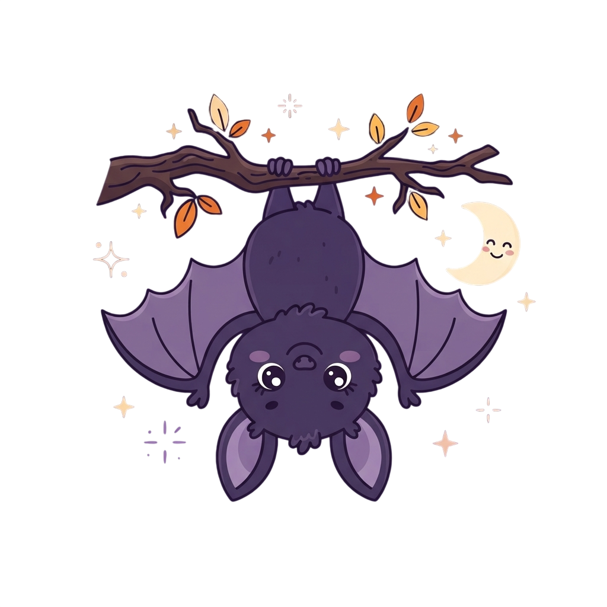
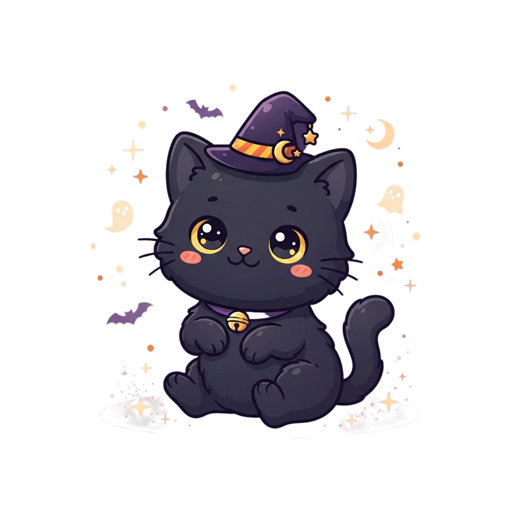

お ば け や し き へ よ う こ そ
▼ SCROLL ▼
このサイトでは、ふしぎなことが起こります
ABOUT
100年前、この館にすんでいた一家は、ある夜とつぜん姿を消した。
のこされたのは、書きかけの日記と、止まったままの時計だけ——。
あなたに与えられた時間は15分。館のおくにある「かぎ」を見つけて、
正面げんかんから出ることができれば、あなたの勝ちです。
ATTRACTIONS
くらやみの中、あなたの名前をよぶ声がする。ふり返ると、そこには——。

天じょうにぶらさがる、さかさまの見はり番。目が合ったら、ごあいさつ。

とびらの前に、黒ねこがすわっている。通してくれるかは、ねこしだい。
INFORMATION
| 開催日 | 2026年10月31日（土）〜 11月3日（火） |
|---|---|
| 時間 | 18:00 〜 22:00（最終受付 21:30） |
| 場所 | 旧・霧ヶ丘洋館 |
| 料金 | 1,800円 / 高校生以下 1,200円 |
| 所要時間 | 約15分 |